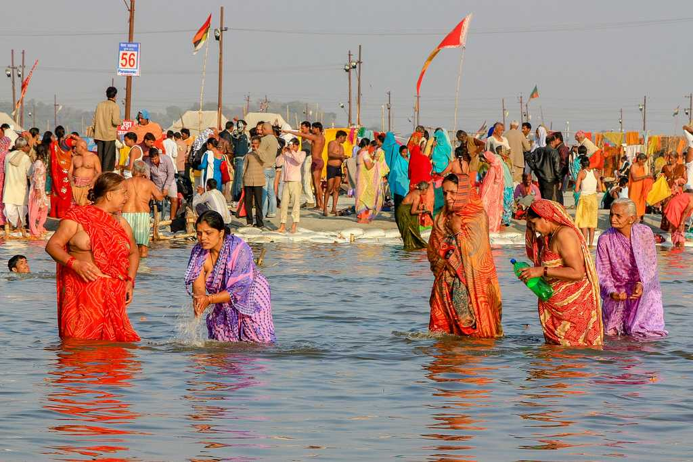

Welcome to Uttar Pradesh!

Uttar Pradesh, located in northern India, is a state steeped in history, spirituality, cultural diversity, and
architectural grandeur. As India's most populous state, Uttar Pradesh (UP) is known for its iconic landmarks,
religious significance, literary heritage, and vibrant festivals.
Historical and Architectural Heritage: Uttar Pradesh boasts a rich historical legacy with several UNESCO World
Heritage Sites. The Taj Mahal in Agra, an architectural masterpiece and symbol of eternal love, attracts millions
of visitors annually. Agra Fort, also a UNESCO site, showcases Mughal architecture and served as the seat of power
for generations of emperors. Fatehpur Sikri, an abandoned Mughal city known for its stunning red sandstone
structures, is another testament to UP's architectural splendor.
Religious Diversity: Uttar Pradesh is a melting pot of religious traditions, home to significant pilgrimage
sites for Hindus, Muslims, Buddhists, Jains, and Sikhs. Varanasi, one of the world's oldest continuously inhabited
cities, is sacred to Hindus and known for its ghats (steps) along the Ganges River, where pilgrims perform rituals
and ceremonies. Allahabad (Prayagraj) hosts the Kumbh Mela, the largest religious gathering on earth, where
millions gather to bathe in the confluence of sacred rivers.
Literary and Cultural Heritage: Uttar Pradesh has a rich literary tradition with celebrated poets and writers
like Tulsidas (author of Ramcharitmanas), Kabir, and Munshi Premchand. Lucknow, the state capital, is renowned for
its Nawabi culture, Urdu poetry, and classical music. The city's architectural gems include the Bara Imambara, a
historical complex with a labyrinth known as Bhulbhulaiya, and the Chota Imambara, adorned with intricate
chandeliers and Persian calligraphy.
Festivals and Celebrations: Uttar Pradesh celebrates a myriad of festivals that reflect its cultural diversity
and religious fervor. Diwali, Eid, Holi, and Navratri are celebrated with traditional rituals, music, dance, and
vibrant processions. The Ramlila of Ramnagar in Varanasi, a theatrical enactment of the Ramayana, attracts large
crowds during the festival of Dussehra. The annual Taj Mahotsav in Agra showcases the state's handicrafts, folk
music, and dance forms, offering a glimpse into UP's cultural mosaic.
Cuisine: Uttar Pradesh's cuisine is as diverse as its cultural landscape, with influences from Mughlai,
Awadhi, and vegetarian dishes prevalent across the state. Lucknow is renowned for its Nawabi cuisine, including
delicacies like Kebabs (such as Galouti Kebab and Seekh Kebab), Biryani, and traditional sweets like Shahi Tukda
and Malai Gilori. Varanasi offers street food delights like Chaat, Samosa, and the famous Benarasi Paan,
reflecting the city's culinary vibrancy.
Art and Handicrafts: Uttar Pradesh is known for its traditional arts and crafts, including Chikankari
embroidery from Lucknow, Banarasi silk sarees and brocades from Varanasi, and brassware from Moradabad. The
state's artisans create exquisite pottery, woodwork, and marble inlay, showcasing their craftsmanship and cultural
heritage through generations.
Natural Beauty: Uttar Pradesh's natural landscapes range from the fertile plains of the Ganges and Yamuna
rivers to the forested hills of the Himalayan foothills in places like Dudhwa National Park. The Dudhwa Tiger
Reserve is known for its diverse wildlife, including tigers, elephants, and rare bird species, offering
opportunities for wildlife safaris and eco-tourism experiences.
In summary, Uttar Pradesh's blend of historical landmarks, religious significance, cultural diversity, literary
heritage, and culinary delights makes it a captivating destination for travelers seeking a deep dive into India's
rich tapestry of traditions and experiences. Whether exploring ancient temples, attending colorful festivals,
savoring regional cuisines, or admiring architectural marvels, Uttar Pradesh offers a glimpse into the soul of
India.